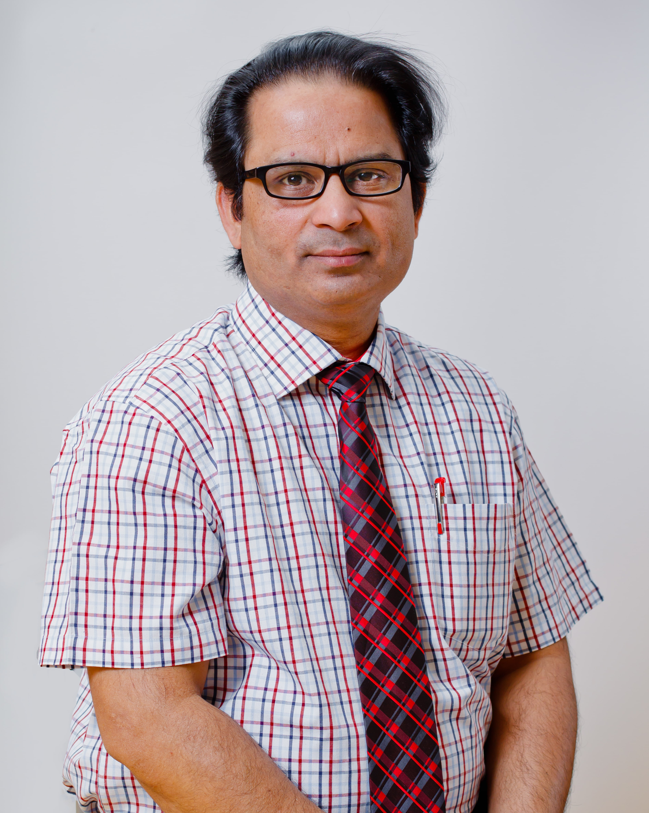
Питер Друкер однажды сказал: ‘Единственный навык, несущий исключительную значимость в 21 веке, это навык учиться новым навыкам. Всё остальное имеет тенденцию устаревать с течением времени. ’
В эти слова, не растерявшие своей силы, всё так же верят и позиционируют, как непрерывный глобальный феномен в ряде ситуаций национального и международного масштаба. Навыки 21 века отличаются многогранностью и мы, школа «Мирас», посредством интегрированных программ IB даём нашим студентам весь набор необходимых навыков для того, чтобы эти грани открыть.
Мы глубоко убеждены в том, что практическая деятельность, организуемая преподавателями на основании подготовки проектов, способствует росту студентов в любом аспекте жизни. Одним из таких инновационных видов деятельности и является STEM.
Школа «Мирас» начала практиковать STEM -подход в 2014 году. Его цель заключалась в предоставлении студентам разнообразных мультидисциплинарных возможностей, дабы они смогли собственноручно работать над практическими проектами в рамках STEM (деятельности). Чтобы способствовать креативности, студенты улучшают и расширяют спектр своих навыков, принимая роль молодых исследователей, доводя эти навыки до уровня соответствия навыкам 21 века, необходимого для дальнейшего образования.
Наш подход находит отражение в технологическом, экологическом и социальном аспектах STEM (деятельности) в каждодневной жизни. В 2018-19 учебном году школа «Мирас» развернула полномасштабную STEM (деятельность) путём организации учения на проектной основе, с охватом учащихся от детского сада до старшей школы. В ходе текущего академического года школа «Мирас» провела первый фестиваль, на котором собрались представители (учащиеся) более чем 20 школ; вместе с нашими студентами они приняли участие и поделились своими методами STEM и знаниям, полученными в ходе их познавательной работы. Также, школа «Мирас» активно способствует обучению учителей всех предметов, чтобы они смогли поддержать STEM (деятельность).
Долгосрочно инвестируя время и ресурсы в дальнейшие возможности студентов, школа «Мирас» помогает им оставаться исследователями на протяжении всей их жизни.
Мистер Виная Пандей Кумар
Руководитель STEM
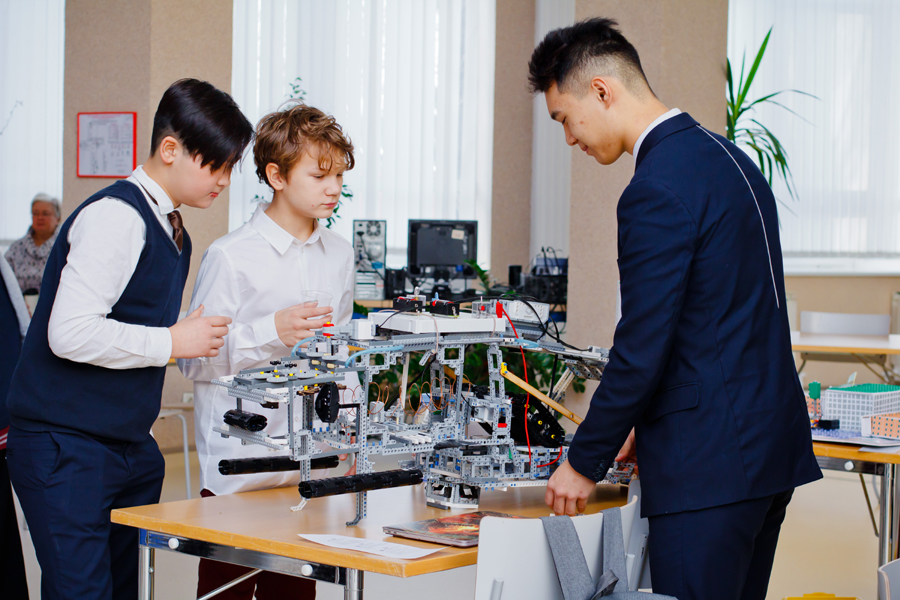
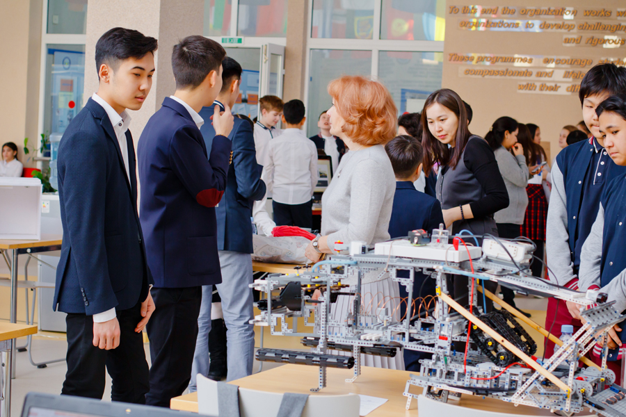
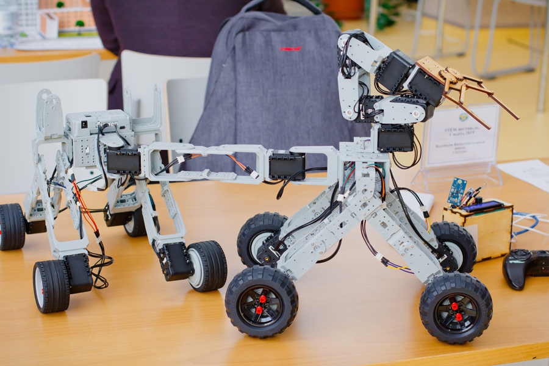
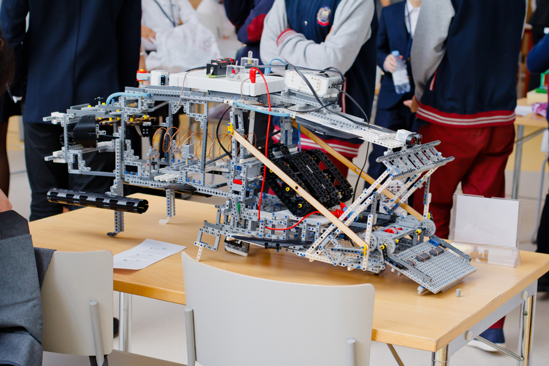
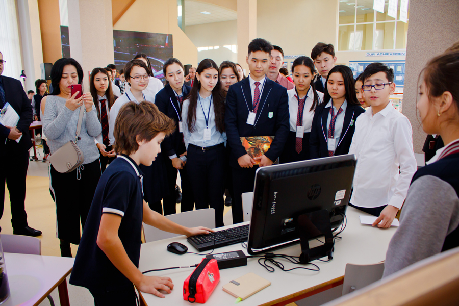
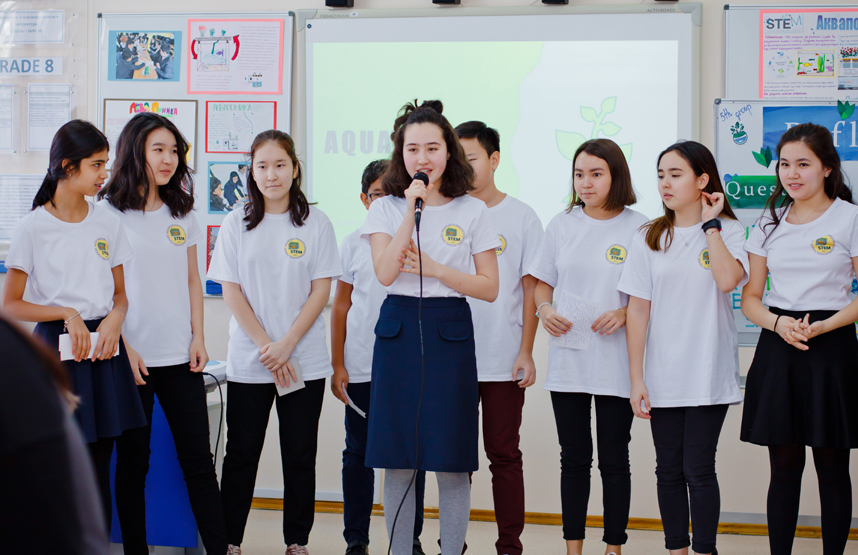
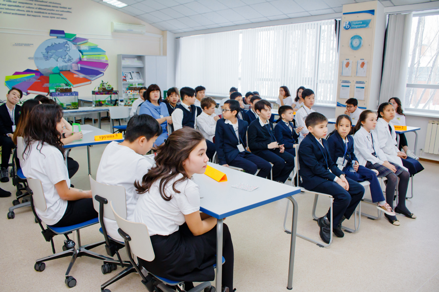
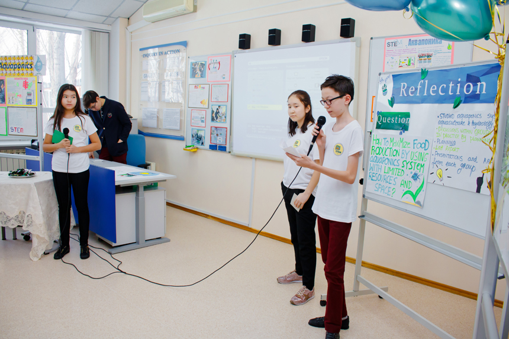
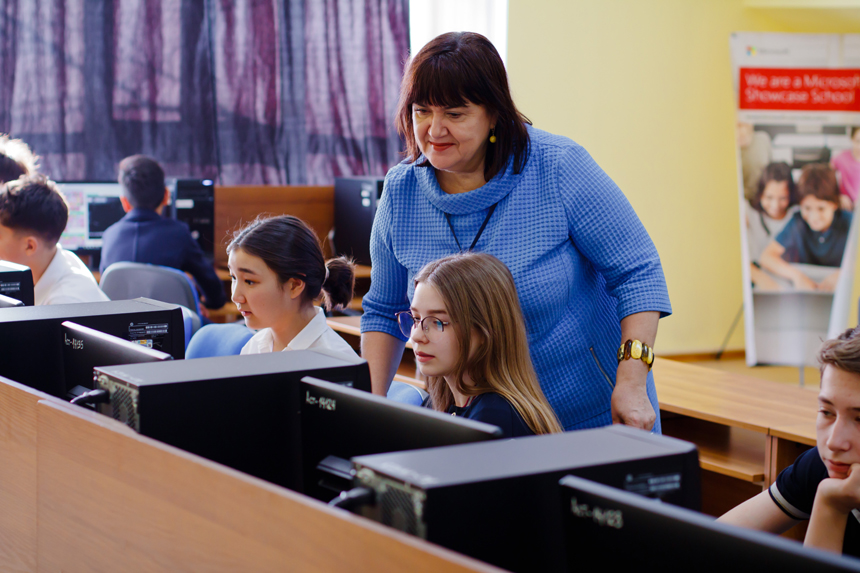
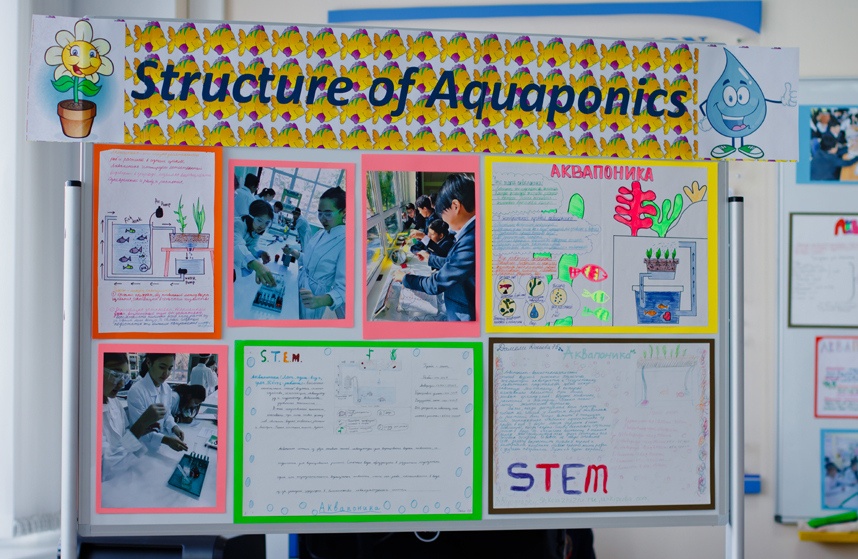
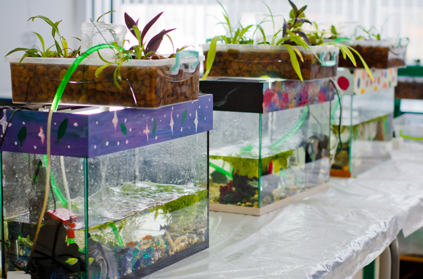
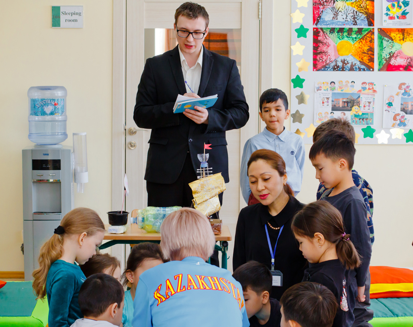
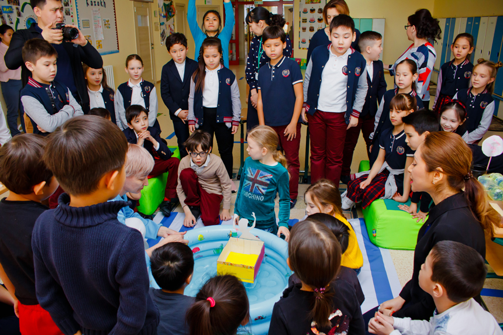
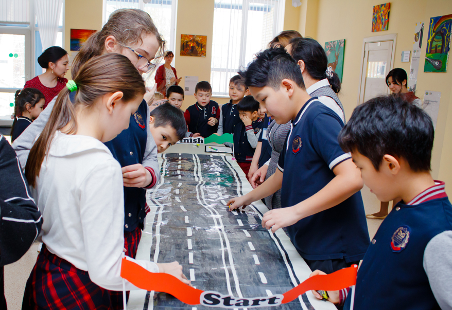
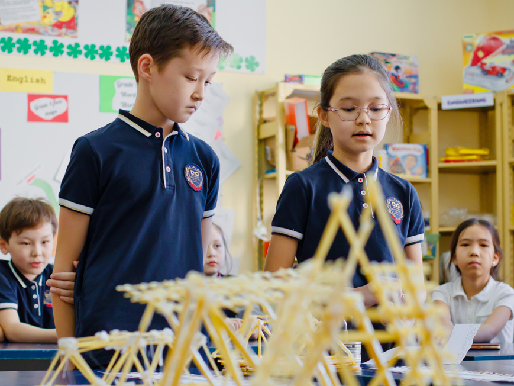